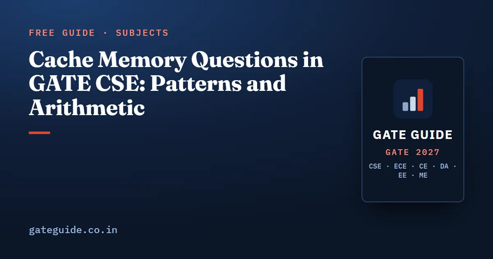

Cache Memory Questions in GATE CSE: Patterns and Arithmetic

Cache memory questions in GATE CSE are built from four repeating templates: split an address into tag, index and offset; size the tag directory; count hits and misses on a trace; and compute average memory access time. The numbers change every year, the procedure does not. This guide works each template with a short example you can redo on paper, and lists the traps that turn a correct method into a wrong answer.
In this guide
Key takeaways
- Four templates cover almost every cache question: the address split, the tag directory, the trace count and AMAT.
- Cache mapping arithmetic has appeared in essentially every paper from 2014 onward in the reconstruction used here, usually as a NAT item.
- Every split starts from one identity: .
- The number of sets, not the number of lines, decides the index width. This is the single most common slip.
- GATE intends the hierarchical AMAT model unless the question says otherwise: the next level's time is added only on a miss.
Where cache questions sit in the paper
Third-party analyst compilations place Computer Organization and Architecture at 3 to 12 marks per paper from 2009 to 2026, typically 8 to 11 marks, which is five to seven questions. These figures are unofficial and analysts differ by two to three marks on borderline items, because floating-point and memory-decoding questions are sometimes counted under Digital Logic instead.
| Period or paper | COA marks (analyst figures) |
|---|---|
| Average, 2009–2017 | about 7.7 |
| Average, 2018–2026 | about 9.2 |
| Average, 2009–2026 | about 8.5 |
| Lowest and highest | 4 (2019) and 12 (2023) |
| 2026 Shift 1 | 9 (three 1-mark and three 2-mark questions) |
Within that budget, the memory hierarchy and pipelining are the two pillars; the book's analysis estimates that together they have supplied roughly 60 to 70 per cent of COA marks since 2014. The 2027 syllabus wording, "Memory interfacing and hierarchy: performance, cache memory mapping", names both cache mapping and hierarchy performance explicitly, so the historical core is confirmed rather than displaced. For the wider subject picture, read the COA important topics guide and the 2027 COA syllabus changes.
The address split every question starts from
Work in this fixed order and the split never goes wrong.
- .
- .
- .
- .
- .
A worked example. Byte-addressable memory with 32-bit physical addresses, a 64 KB 4-way set-associative cache, 32-byte blocks.
The inverse form is asked just as often: the tag is given and you must find the cache size or the associativity. Run the same five steps backwards. With an 18-bit tag on a 32-bit address and 32-byte blocks, the index must be bits, so there are 512 sets, and the associativity follows from the cache size.
Two special cases fall out of the same identity. A direct-mapped cache is 1-way, so sets equal lines. A fully associative cache has one set, so the index is zero bits wide and the tag takes every non-offset bit. That fully associative form was asked in 2019, the last IIT Madras paper.
Associativity: which field moves
Setters like to change one parameter and ask which field width changes. Hold the identity in mind and it is immediate.
| Change, cache size fixed | Offset | Index | Tag |
|---|---|---|---|
| Associativity doubles | unchanged | bit | bit |
| Block size doubles | bit | bit | unchanged |
| Cache size doubles, other things fixed | unchanged | bit | bit |
The row worth memorising is the first one: doubling associativity halves the number of sets, so one bit moves from the index into the tag and the block offset is guaranteed untouched.
Tag directory size
The tag directory is the metadata, not the data. Count the bits stored per line, then multiply by the number of lines.
Take the same cache: 2048 lines, 18-bit tag, write-back, with a valid bit, a dirty bit and 2 bits per line to maintain LRU order inside a 4-way set. Per line that is 22 bits, so the directory holds 5.5 KB:
Two cautions. Multiply by lines, not by sets. And the replacement-bit convention varies between questions: some state a fixed number of bits per line, others give bits per set. Use exactly what the question says and do not import a convention from a solved example.
Counting hits and misses on a trace
Trace questions give a sequence of block addresses and ask for the miss count, the hit ratio, which block survives at the end, or how many misses are conflict misses. Map each block with , then apply the replacement policy inside the set.
A small example. A 2-way set-associative cache with 4 lines total, so 2 sets, LRU replacement, initially empty. Block reference sequence 0, 1, 2, 0, 3, 4, 2, 0.
| Reference | Set | Result | Set contents after (LRU first) |
|---|---|---|---|
| 0 | 0 | miss | 0 |
| 1 | 1 | miss | 1 |
| 2 | 0 | miss | 0, 2 |
| 0 | 0 | hit | 2, 0 |
| 3 | 1 | miss | 1, 3 |
| 4 | 0 | miss, evict 2 | 0, 4 |
| 2 | 0 | miss, evict 0 | 4, 2 |
| 0 | 0 | miss, evict 4 | 2, 0 |
That is 7 misses and 1 hit, a hit ratio of 12.5 per cent. Classifying them: 5 blocks are touched, so 5 misses are compulsory. Running the same sequence on a fully associative 4-line LRU cache gives only those 5 misses, so the remaining 2 misses are conflict misses and none is a capacity miss. That comparison is the definition, and it is worth doing once by hand so the three categories stop blurring.
Average memory access time
AMAT is the second pillar of the memory hierarchy questions, and GATE intends the hierarchical model: the lower level's time is added only when the level above misses.
For two levels, , where is the L2 local miss rate. Example: ns, per cent, ns, L2 local miss rate 20 per cent, memory 100 ns.
The companion concept is the local versus global miss rate. L2's local miss rate is measured over the accesses that reach L2; its global miss rate is measured over all accesses, here , or 1 per cent. Questions that give misses per thousand instructions and accesses per instruction are asking you to convert between the two. The inverse form gives the AMAT and asks for a miss rate, or asks for the minimum hit rate that keeps AMAT unchanged after a design change.
The traps that cost marks
- Sets, not lines. Index width comes from the set count. Forgetting to divide by the associativity is the most frequent error in this family.
- Byte versus word addressing. If memory is word-addressable, the offset counts words, not bytes. Unit confusion is the classic wrong-answer generator in COA.
- KB means . GATE uses powers of two for memory sizes unless a question states otherwise.
- Block size in words. A block given as "8 words" with 4-byte words is 32 bytes, so the offset is 5 bits, not 3.
- Fully associative caches have no index. The whole non-offset part is the tag.
- Hierarchical versus parallel access. Adding the lower level's time on every access instead of only on a miss produces a plausible but wrong AMAT.
- Miss penalty inclusive or not. "50 ns on a miss" is usually the total time, not an extra amount added to the hit time. Read the sentence, not the number.
- LRU order updates on hits. A hit makes that line the most recently used, which changes the next eviction.
- Tag directory counts lines. Valid, dirty and replacement bits are per line, and the dirty bit only exists for write-back.
A wider list across every subject is in the guide to common mistakes that cost marks, and the core formulas sit in the GATE CSE formula sheet.
How to practise cache questions
Do the five-step split from scratch on ten different parameter sets until it takes under a minute, including the inverse forms where the tag width is given. Then take one trace and run it twice, once on the given cache and once on a fully associative cache of the same size, so the miss classification becomes mechanical. Finish with AMAT in both directions: compute the time from the rates, then recover a rate from a stated time.
Keep one page of conventions next to you while practising: addressability, block units, KB base, replacement bits, whether the miss penalty includes the hit time. Cache questions are not conceptually hard. They are won by candidates who read the conventions before touching the numbers, which is exactly the habit that the most repeated topics analysis shows pays off across the whole paper. The COA chapter of the GATE CSE 2027 book extends these four templates into the full pattern list, with a question bank of worked solutions built on them.
Frequently asked questions
How do you calculate tag, index and offset bits in a cache?
Offset bits equal the base-two logarithm of the block size in bytes. Index bits equal the logarithm of the number of sets, where sets equal cache size divided by block size and associativity. Tag bits are whatever is left of the physical address. The three widths always add up to the full address width.
Are cache questions asked every year in GATE CSE?
Cache mapping arithmetic has appeared in essentially every paper from 2014 onward, by the analyst reconstruction this guide uses, often as a one-mark item and sometimes again as a two-mark item. That record makes it a high-priority topic for 2027, but no topic is guaranteed to appear in a given paper.
What is the formula for average memory access time?
For a hierarchical two-level cache, : the L1 hit time plus the L1 miss rate times the sum of the L2 hit time and the L2 local miss rate times the memory access time. GATE almost always intends this hierarchical model, in which the next level's time is added only on a miss, not a parallel access model.
How many bits does a cache tag directory need?
Count the metadata bits stored per line, which is the tag width plus a valid bit, plus a dirty bit for a write-back cache, plus any replacement bits the question specifies. Multiply by the number of lines, not the number of sets. The replacement-bit convention varies, so use the one the question states.
What is the difference between a conflict miss and a capacity miss?
A conflict miss would have been a hit in a fully associative cache of the same total size with the same replacement policy. A capacity miss would still miss there, because the working set exceeds the cache. Compulsory misses are the first reference to each block. Checking against a fully associative run settles the classification.
Sources
- GATE 2027 official website (IIT Madras)
- GATE 2027 CS syllabus (official PDF)
- GATE 2027 question paper pattern (official)
- GeeksforGeeks subject-wise weightage for GATE CS
- GATE Overflow previous year questions
Dates, fees and the syllabus are set by the GATE 2027 organising institute and can change. Always confirm at gate2027.iitm.ac.in.